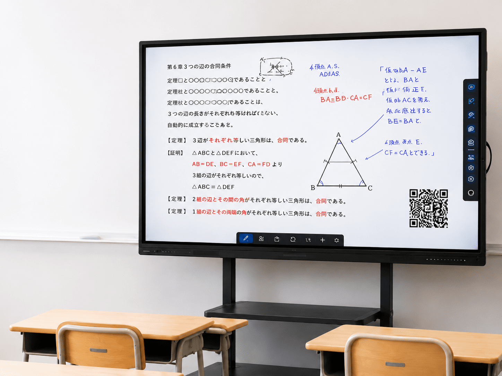
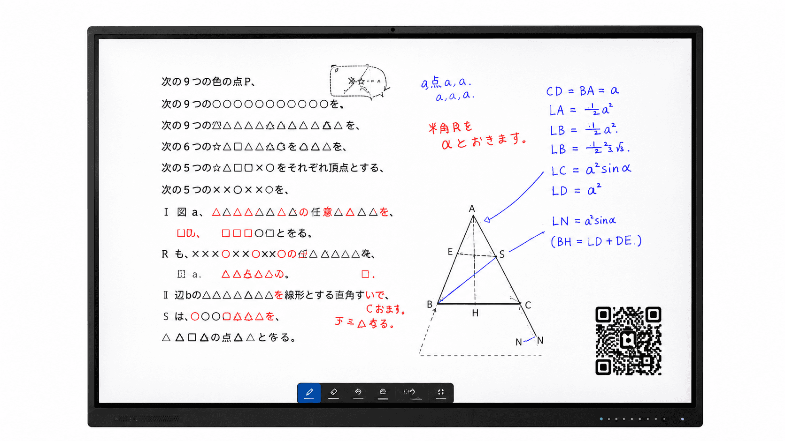
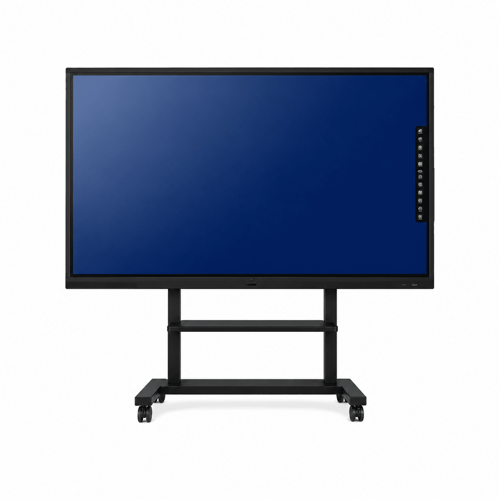
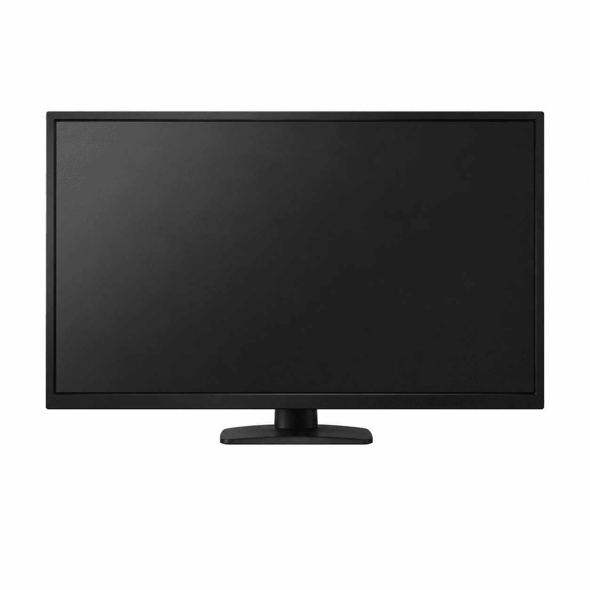
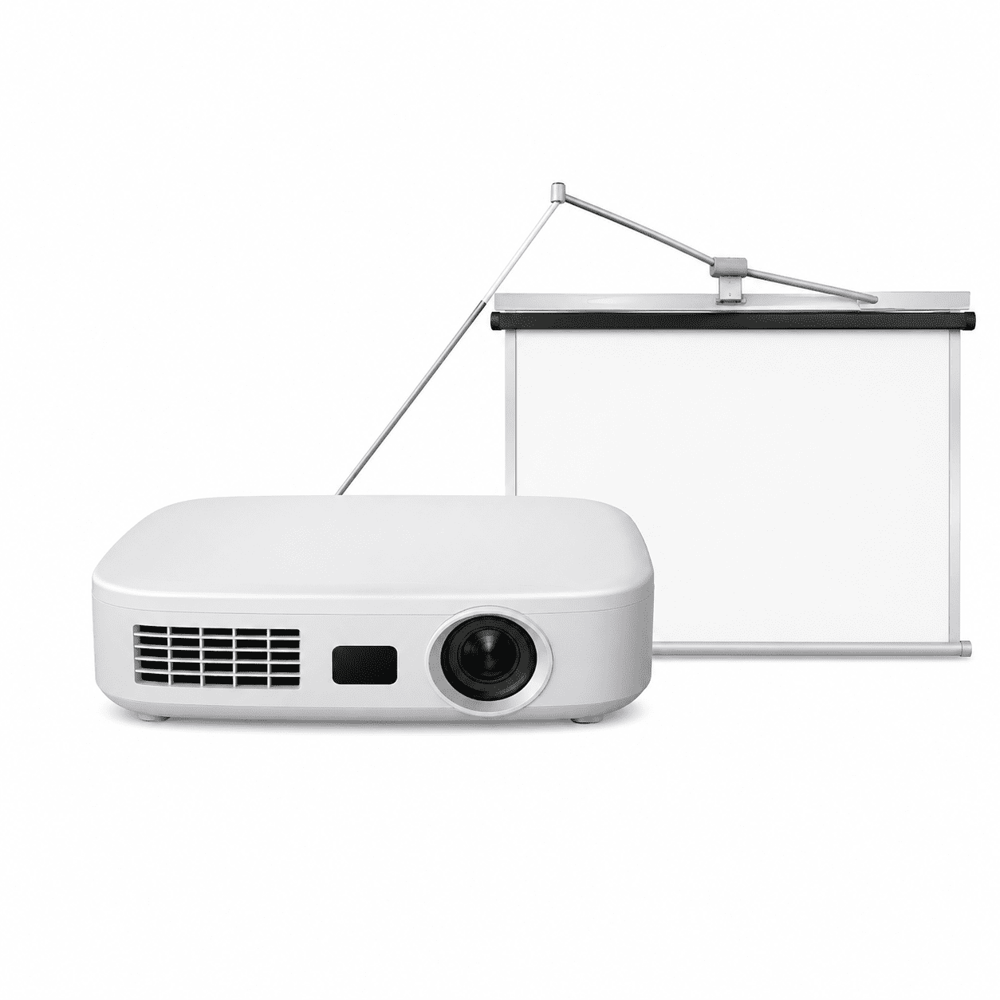
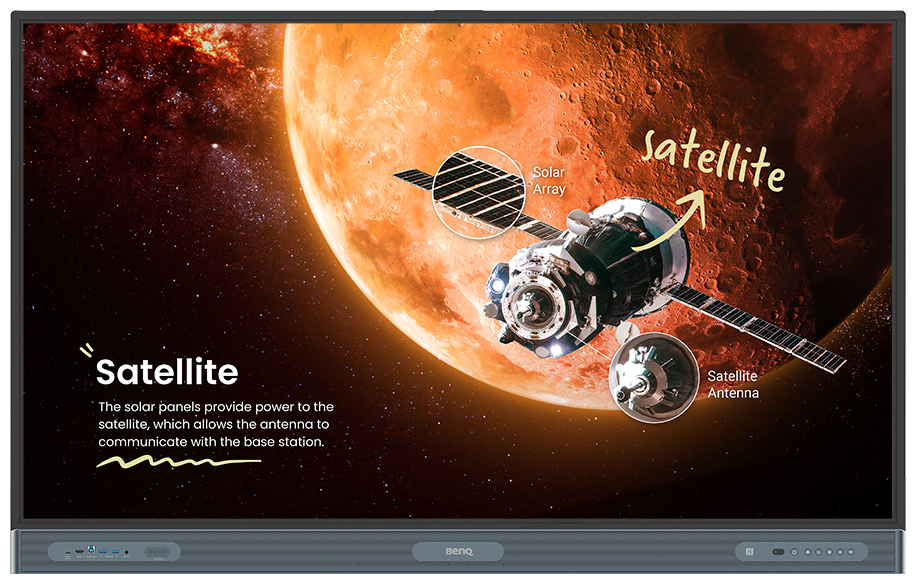
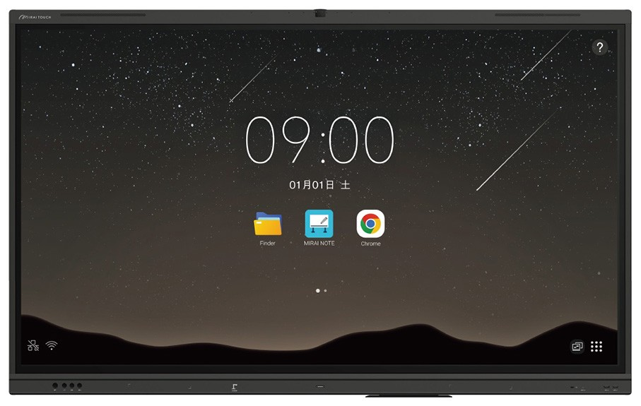
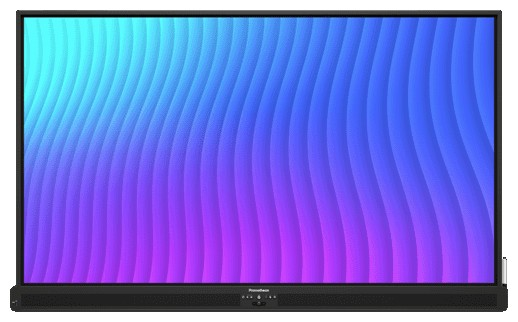
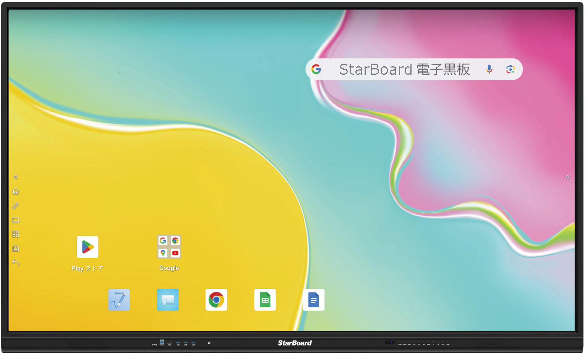

見せる
高精細な大画面で、
どの席からも見やすい。
電子黒板は、画面に資料を映し、指やペンで直接書き込み、保存・共有までできるタッチ式ディスプレイです。
学校や学習塾をはじめ、企業の会議・研修でも活用されています。

Kokuban BASE独自の推奨基準です。教育現場での使用経験と実機検証をもとに、初めての方が比較しやすい基準をまとめました。各行の根拠は、このページの各セクションで解説します。
| 項目 | 迷ったらこれ | 理由の要点 |
|---|---|---|
| 種類 | タッチディスプレイ型（OS搭載）一択 | 明るい教室でそのまま見え、電源だけで起動する大型モニターとの違いを詳しく見る › |
| 標準搭載機能 | 12の標準搭載機能のうち、10項目以上を網羅 | 授業で必要な機能を、追加機器や別契約なしで使いやすい12の標準搭載機能を確認する › |
| サイズ | 15名までは65インチ／16〜30名は75インチ以上／30名以上は86インチ以上 | 後席から文字が読めるかで決まるサイズ選びの記事を読む › |
| OS | Android 14以上（長く使うなら15以上） | サポート切れまでの残り期間が寿命を左右するOS選びの記事を読む › |
| メモリ | 8GB以上。4GBは要注意 | 板書＋教科書＋ミラーリングの同時使用で差が出るスペックの見方を詳しく見る › |
| CPU | クアッドコア（4コア）以上 | 手書きの追従（カクつき）に直結するCPU選びの記事を読む › |
| 設置 | まずはキャスター付きスタンド | 壁の強度・賃貸の制約を後から考えずに済む |
| 予算 | 65インチで本体約38〜52万円＋スタンド・保証・工事 | 本体だけで予算を組むと後から超過する価格・費用の記事を読む › |
| 初期費用を抑えるなら | リース 月額14,190円（税込）〜（5年リース・65インチの例） | 原則5年契約。キャッシュフローを平準化できるリースの記事を読む › |
電子黒板は、パソコンやタブレットの画面、PDF、画像、動画などを大画面に表示し、指や専用ペンで直接操作・書き込みできる機器です。OSを内蔵したタイプなら、パソコンを接続せず単体で起動できます。教育現場では教材提示や板書、企業では会議・研修や共同作業に利用されます。このページでは一般的な仕組みを押さえたうえで、Kokuban BASEが専門とする学校・学習塾での選び方を詳しく解説します。

高精細な大画面で、
どの席からも見やすい。
滑らかな書き心地で、
板書のように書き込める。
授業内容をデータで保存し、
復習や共有に活用できる。
QRやクラウドで、
生徒の端末にすぐ共有。
 電子黒板 |
 大型モニター |
 プロジェクター |
|
|---|---|---|---|
| その場で書き込み | ○ | △ | − |
| 保存・データ化 | ○ | △ | − |
| QRで簡単共有 | ○ | △ | − |
| 明るい教室での見やすさ | ○ | △ | △ |
| 設置のしやすさ | ○ | ○ | − |
| ランニングコスト | ほぼなし | ほぼなし | ランプ交換などあり |
65インチ
少人数の教室におすすめ
推奨人数：15名まで
75インチ
標準的な教室におすすめ
推奨人数：16〜30名
86インチ
広い教室・ホールにおすすめ
推奨人数：30名以上
トータルで考えることで、長く安心して使える環境をつくることができます。
本体価格は、65インチで約38〜52万円が目安です。
※ 壁掛けで設置する場合は、別途「壁掛け金具」と「設置工事」の費用が必要です。
一般的な製品保証期間は5年間ですが、保証期間と製品寿命は同じではありません。Kokuban BASEの運営教室では、導入から7年目も使用できている実例があります。詳しくは電子黒板の耐用年数を解説した記事をご覧ください。
リースなら月額14,190円（税込）〜（5年リース・65インチの例）。初期費用を抑えて導入できます。
カタログのスペック表で見るべき項目は、OS・メモリ・CPUの3つだけ。この3つで使い心地の9割が決まります。この基準を下回るモデルは、価格がどれだけ魅力的でも候補から外すことをおすすめします。
| 観点 | 最低ライン | 安心ライン |
|---|---|---|
| OS（Android） | 14未満は要注意 | Android 14以上（できれば15以上） |
| メモリ | 4GBは要注意 | 8GB以上 |
| CPU | クアッドコア | クアッドコア＋新しめの世代 |
OS：Android 14以上。14未満は要注意。電子黒板は5年・7年と使う設備なので、OSのサポートが切れるまでの残り期間がそのまま製品の寿命になります。新規導入ならAndroid 14以上、長く使う前提なら15以上を選んでください。
メモリ：8GB以上。「4GBで十分」は数年後に後悔します。授業中の電子黒板は、板書アプリ・デジタル教科書・ミラーリングの「ながら作業」が常態です。メモリは後から増設できない製品がほとんど。「今ちょうど足りる」ではなく「数年後も足りる」で選んでください。
CPU：クアッドコア（4コア）以上。手書きの追従性——書いた線が遅れずについてくるか——に直結します。動画教材を多用するなら、新しい世代のCPUだとさらに余裕があります。
参考：2026年時点の上位モデル（例：BenQ Boardの最新RP05シリーズ）はAndroid 15・メモリ16GB。足切りラインは「贅沢な基準」ではなく、市場の現在地から見れば標準的な水準です。
以下は、Kokuban BASEが教育現場での使用経験と実機検証をもとに独自に定めた12の標準機能です。導入後に「使いたい機能が使えなかった」とならないよう、候補の機種が12項目のうち10項目以上を標準で網羅しているか確認することを推奨しています。
機能・操作性・サポートなどを比較して、最適な一台を選びましょう。

国内インター校シェアNo.1。英語教育・探究学習など、授業での積極活用と好相性。

累計7万台を突破。迷わず使える操作性で、校内全体での定着を重視する現場に。

アメリカ発、世界の教室で人気。生徒が参加する双方向型の授業づくりに強い。

世界50万台以上の導入実績を持つ老舗。はじめての電子黒板でも選びやすい安定感。
電子黒板の失敗は製品の不良ではなく、ほぼ「選び方」と「運用設計」で起きます。体験や相談の場で繰り返し目にする失敗は、次の3つです。
4GBメモリや古いOSのモデルは、初年度は問題なく動きます。効いてくるのは2〜3年目、アプリの要求スペックが上がってから。「安く買えた」が「早く買い替える」に化けます。本体で5万円をけちって寿命が2年縮むなら、明確に損です。
導入がゴールになり、誰がどの授業で何に使うかを決めないまま設置すると、数ヶ月後には「たまに動画を映す高いテレビ」になります。対策は、①まず1台から始める、②最初に使う機能を2つに絞る、③操作が直感的なモデルを選ぶ——の3つ。ICTが得意な先生ではなく、一番苦手な先生が使えるかで選ぶと外しません。
壁掛けは見た目がすっきりしますが、壁の強度確認や賃貸物件の制約、工事費が絡みます。迷ったらまずキャスター付きスタンドで導入し、運用が固まってから壁掛けを検討する順番が安全です。教室間で使い回せる副次効果もあります。
関連コラム：設置方法の選び方
ご要望や課題を
お聞きします
最適な製品・プランを
ご提案します
導入費用の目安を
ご提示します
設置・設定まで
丁寧に対応します
活用支援・サポートで
安心して使える環境に
監修：株式会社 idea spot 会員制難関指導専門塾 elio
Kokuban BASE編集部は、電子黒板選びの総合窓口「Kokuban BASE」を運営する株式会社idea spot（2016年創業・京都で学習塾を運営）のメンバーで構成されています。2020年に自社教室へ電子黒板を導入して以来、会員制難関指導専門塾elioの授業で毎日フル活用しながら、体験倉庫での実機検証に基づいて記事を執筆しています。
大きな違いは、タッチ操作・書き込み・保存共有・OSの有無です。板書しながら進める授業なら電子黒板、資料を映すだけなら大型モニターで足ります。
移動式スタンドなら工事は不要で、設置スペースは65インチで横幅約1.5mが目安です。壁掛けにする場合のみ、別途「壁掛け金具」と「設置工事」が必要になります。
Kokuban BASEでは、65インチは15名まで、16〜30名は75インチ以上、30名以上は86インチ以上を推奨しています。最終的には、一番後ろの席から文字が読めるかを確認して選びます。
一般的な製品保証期間は5年間ですが、ブランドや製品、契約内容によって異なります。Kokuban BASEでは、保証内容の確認から初期設定、操作研修、導入後の活用相談まで一つの窓口でサポートします。
板書をワンタップでQRコード化し、生徒がスマホやタブレットで読み取るだけで手元に保存できます。クラウド連携での共有にも対応しています。
はい。関西圏では関西ショールーム、首都圏では提携ショールームで実機を体験できます。その他の地域や遠方のお客様にはオンラインデモをご案内しています。
一般的な製品保証期間は5年間ですが、保証期間と製品寿命は同じではありません。使用環境や製品によって異なり、Kokuban BASEの運営教室では導入から7年目も使用できている実例があります。長く使うためには、保証内容に加えてOSやメモリなど将来の使い方に耐えられる仕様を確認することが大切です。実際の使用例を記事で詳しく見る
学校・自治体向けには、GIGAスクール構想第2期で電子黒板を含むICT環境の整備が推進されています。対象や要件は年度・地域で変わるため、最新情報は文部科学省や自治体の一次情報をご確認ください。
タブレットは一人ひとりの手元の画面、電子黒板はクラス全体で共有する大きな1枚です。1人1台端末と対立するものではなく、個人の学びと全体の学び合いをつなぐ役割を持ちます。
.png?fit=crop&w=480&h=270&q=80)

.png?fit=crop&w=480&h=270&q=80)
.png?fit=crop&w=480&h=270&q=80)
.png?fit=crop&w=480&h=270&q=80)
.png?fit=crop&w=480&h=270&q=80)
.png?fit=crop&w=480&h=270&q=80)
.png?fit=crop&w=480&h=270&q=80)


.png?fit=crop&w=480&h=270&q=80)
.png?fit=crop&w=480&h=270&q=80)
.png?fit=crop&w=480&h=270&q=80)
.png?fit=crop&w=480&h=270&q=80)

.png?fit=crop&w=480&h=270&q=80)
.png?fit=crop&w=480&h=270&q=80)

.png?fit=crop&w=480&h=270&q=80)